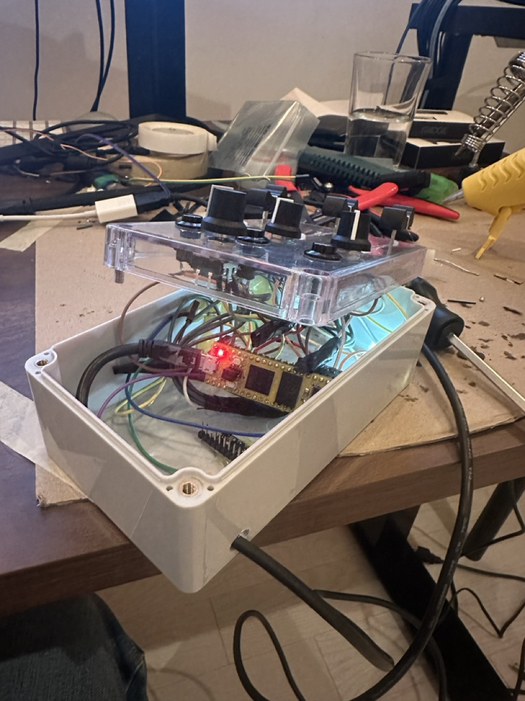
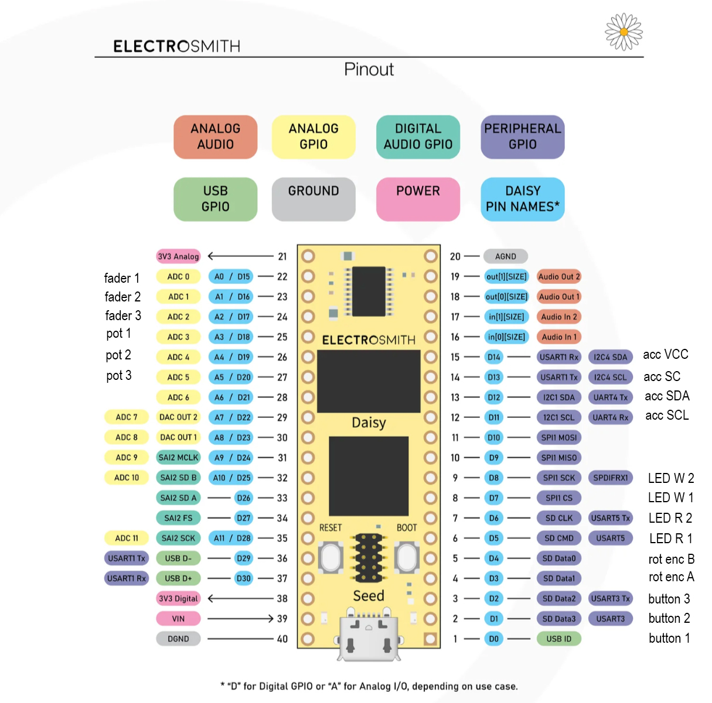
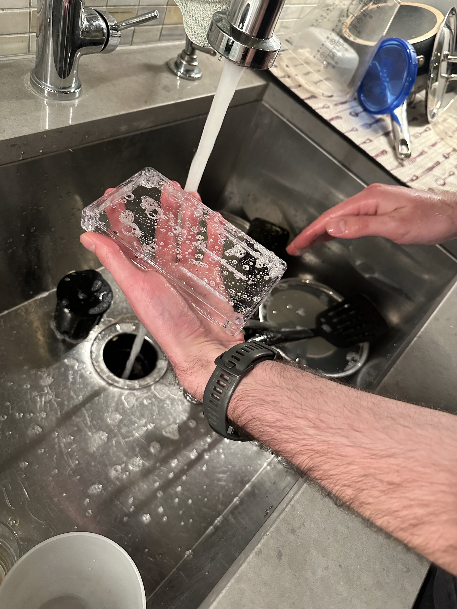
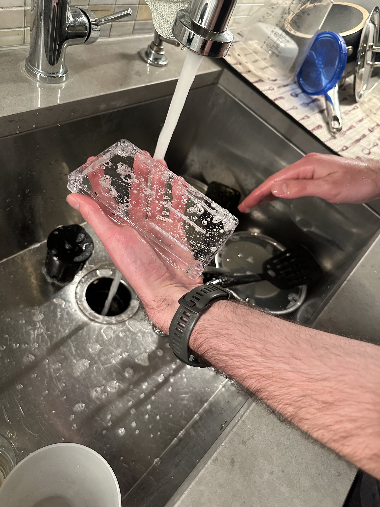

We wanted to show that using a Daisy Seed to interface with MIDI was much better than using an Arduino,
due to the Daisy Seed being able to read multiple inputs simultaneously, with the ability to have parameters be virtually dependent on one another.

Demo Video
Areas of Interest
- Parameter curve adjustment
- Multiple parameters mapped to single sensor
- Multiple sensors mapped to a single parameter
- Tactile Interface to encourage creativity
- (Goal on a more zoomed-out level) test viability of using this microcontroller in the context of MUMT 306, rather than the Arduino Uno.
How It Works
-
Analogue devices tie their grounds to an analogue GND rail (AGND), digital ones to DGND. VCC rails are also separated between analogue and digital rails. Devices are connected each respective one as well.
-
Sense/wiper lines are connected to analogue ADC pins, while digital device data lines are connected to corresponding pins on the Daisy Seed.
Here is a pinout diagram for the Daisy Seed showing the pins we used in black text:

-
Pin modes are set in the device initialization part of code. The Daisy Seed also features internal pull-up resistors which is helpful for the way we had our buttons wired.
-
The device is initialized as a MIDI controller, which is how we want it to be presented to the host computer.
- Once values are read in they are mapped to integers of values between 0-127
- A MIDI message is constructed as a byte array of size 3. E.g.
uint8_t cc_msg[3] = {0xB0, CC_number, value_to_send_between_0_and_127};
- For ease of legibility in the code, CC numbers are defined at the top of the file in the following manner:
#define JUNO_DCO_LFO 77
#define JUNO_DCO_SUB_LEVEL 85
#define JUNO_DCO_SUB_ON 82
#define JUNO_ATTACK 73
#define JUNO_DECAY 75
#define JUNO_SUSTAIN 76
#define JUNO_RELEASE 72
#define JUNO_FILTER_CUTOFF 74
#define JUNO_UNISON 93
#define JUNO_CHORUS1 80
#define JUNO_REVERB_DECAY 91
#define JUNO_REVERB_LEVEL 81
Note: Some of these CC values are not the default loaded ones in the VST. Due to the limit of externally supported CC values in the VST, some unused parameters were changed for ones we wanted to use in the scope of this project.
The MIDI message is sent: midi.SendMessage(cc_msg, sizeof(cc_msg));
Our Interface
A custom physical interface was created for parameter control.
To be used in conjunction with the Arturia JUN-6V VST:
It features various controls for parameters such as random seed generation, DCO LFO, unison, reverb decay, ADSR, and VCF frequency.
To be used in conjunction with the Arturia JUN-6V VST. Although it could very easily be used with any other VST or even to interact with features within one's DAW.
Challenges
-
Accelerometer Issue: I2C was not functioning as expected. Basic I2C implementations were not available to guide us.
-
C++ Library Documentation: Poor documentation made the development process tedious.
-
Device Code Updates: DFU mode button presses often failed, loosening components. We also could not find others posting solutions to similar issues on the web.
Despite challenges, soldering components and coding logic for parameters went smoothly.
Conclusion
The Daisy Seed shines bright in terms of its power and features when compared to other microcontrollers on the market but also comes with it's set of challenges.
For the scope of this course, we would say that this microcontroller is most definitely a viable option instead of the Arduino Uno. Once some of the issues with documentations are sorted / solutions are brute forced with regards to digital communication with I2C, we think it will be a great option with more power and possibilities than other solutions. Considering people in MUMT 306 are also going to be taking MUMT 307, where the Daisy Seed is required it might be more economical and streamline the tools students need to be familiar with in order to complete their minors in MST.

 
